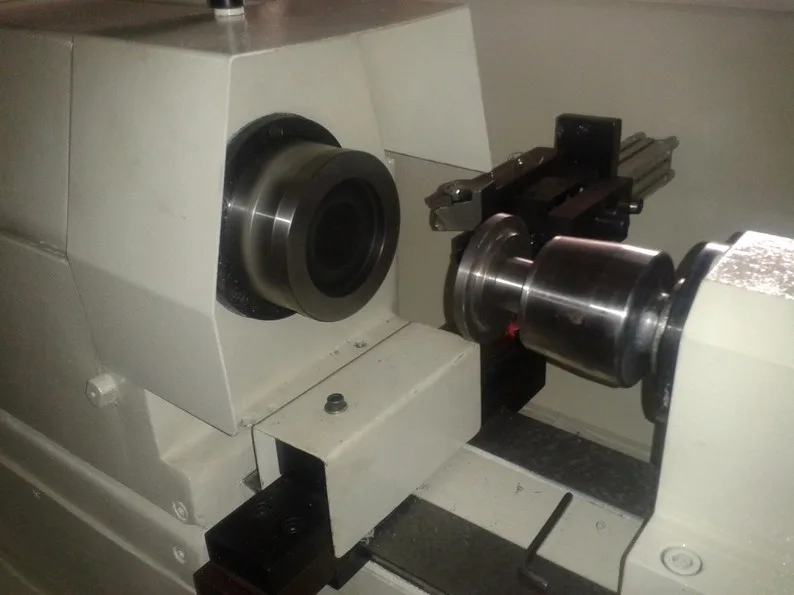

Application, machine, component, target and constraints.
Peenya, Bengaluru · Engineering since 2011
Engineeredfor precision.
Special Purpose Machines · CNC Reconditioning & Retrofit · Precision Component Manufacturing
ENGINEERING SINCE2011Bengaluru machine-building & service experience
MACHINES DELIVERED300+Recorded across customer destinations in India
CUSTOM / SPM REFERENCES39Named custom-machine references in the supplied archive
RETROFIT REFERENCES15Named reconditioning and modernization references
SELECTED ENGINEERING PARTNERSTrelleborg Sealing Systems ↗Yuken India ↗Transtech Gears India ↗TMI Rollon Engineering ↗
Three engineering disciplinesBuild. Restore.
Build. Restore.
Manufacture.
Three ways customers engage VSK, connected by the same machine-tool engineering knowledge.

Selected documented projectsReal machines.
Real machines.
Real project material.
A focused set of projects with visual or technical documentation. The complete 54-reference archive is separate, so the homepage stays clear.
PROJECT DOCUMENTATIONMore than one machine.
More than one machine.
More than one kind of work.
A compact look across turning, drilling, process equipment, material handling and machine-tool engineering using the project material already supplied by VSK.
Measured project references
Numbers with context.
Engineering values become credible when the viewer can immediately see what project they belong to.
Engineering archive54 recorded references.
54 recorded references.
Built over years of machine work.
39 Custom / SPM15 Retrofit12 Visual documentation

PTFE rod turning reference represented by original VSK project photography.
Search the complete archive by machine, application, control system or customer reference.
Explore all 54 references →
MULTI-DISCIPLINARY ENGINEERING
One engineering team.
One engineering team.
Multiple disciplines.
Mechanical design, controls, electrical systems, hydraulics, automation and manufacturing integrated around the machine requirement.

Machine architecture, spindle, workholding and fixture decisions are treated as one production system.
REAL VSK PROJECT MOTION
Retrofit spotlight / RTF 11Kellenberg
Kellenberg
CNC Grinding.
FANUC 0i-TF PLUS
Reconditioning and control modernization presented as a machine-tool lifecycle capability — not as a generic automation service.
RECONDITIONMODERNIZEEXTEND
How VSK works
From production problem to working machine.
A customer sees the whole engineering route at a glance — without an overlong process explanation.
Machine architecture, mechanism, workholding and controls.
Fabrication, assembly, hydraulics, pneumatics and electricals.
CNC, PLC, HMI, servo, VFD and machine sequencing.
Trials, measurement, correction and process confirmation.
Installation, production handover and lifecycle support.
About VSK
Engineering from Peenya since 2011.
Established in Bengaluru in 2011, VSK Electro-Mech Solutions combines special purpose machine building, CNC/PLC service and retrofit, automation, precision component manufacturing, electrical engineering and machine-tool lifecycle support.
Explore accumulated engineering experience →BUSINESS FOUNDATIONOne engineering partner across the machine lifecycle.
- Mechanical + fluid-power engineering
- CNC / PLC / HMI + electrical integration
- New machine + retrofit + production support
- Customer references across seals, hydraulics, gears and manufacturing
Start an engineering requirementHave a machine, component
Have a machine, component
or automation requirement?
New machine, retrofit, component manufacturing, controls or another machine-tool requirement.